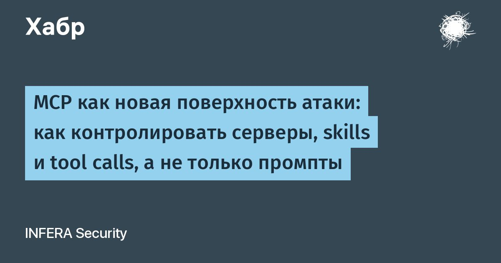

MCP как новая поверхность атаки: как контролировать серверы, skills и tool calls, а не только промпты
ИИ-агент на рабочей станции работает с правами локального пользователя.
Он может читать почту и ходить в SharePoint, запускать команды, работать с файлами и вызывать инструменты через MCP.
Это означает, что защита «на уровне промпта» через LLM Firewall и фильтрацию запросов к модели закрывает только часть поверхности.
Основной риск теперь в действиях агента: вызов инструментов (tool call), вызов MCP-сервера, skills или доступ к корпоративным ресурсам.Ниже разбираем, как именно выглядит атака через косвенную инъекцию, какие механизмы INFERA AI.SafeAgent её останавливают и почему требуется именно такой класс контроля, а также разберем сценарии, по которым заказчики проверяют как срабатывает контроль ИИ-агентов.
Читать далее